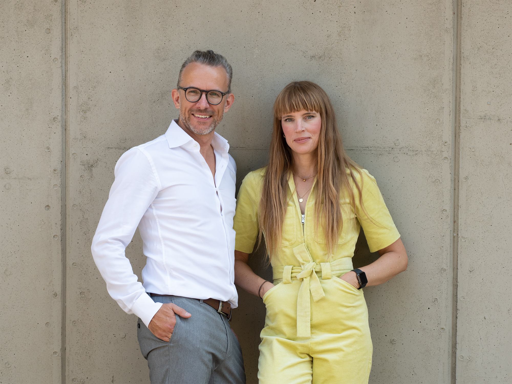

Ihr Bauvorhaben ist unsere Leidenschaft!
Als versierte Architekten mit über 20 Jahren Berufserfahrung im In- und Ausland wissen wir, wie wichtig ein gutes Gefühl für eine erfolgreiche Zusammenarbeit ist. Deshalb steht bei uns der persönliche, intensiv geführte Dialog mit unseren Auftraggebern an erster Stelle. Wir beweisen unser Feingespür für Ihre Wünsche und Vorstellungen und entwickeln maßgeschneiderte Lösungen und ganzheitliche Konzeptionen für Ihren besonderen Bedarf.
Unserem Anspruch an Gestaltung und Qualität folgend, entwickeln wir mit Hingabe ansprechende, zeitgemäße Architektur, die ihrem Kontext gerecht wird. Starke Lösungen – von der Idee bis zur Umsetzung – sind unsere Ambition.
Wir realisieren Ihren Wohnungs- oder Verwaltungsbau sowie Projekte für die kirchliche Kundschaft. Neu-, Um- und Anbauten, Baulückenschlüsse, Aufstockungen, Dachgeschoßausbauten sowie Fassadensanierungen, aber auch Küchen-, Bad- und Möbelplanungen gehören zu den Leistungen, für die Sie uns buchen können – als einzelne Teilleistungen genauso wie für sämtliche Leistungsphasen der Architekturplanung im Paket. Darüber hinaus erstellen wir auf Wunsch Machbarkeitsstudien, um so die finanziellen und baurechtlichen Rahmenbedingungen für die Realisierung Ihres Bauvorhabens zu ermitteln.
„Ein Haus ist gelungen, wenn es den Alltag leise schöner macht."
Sprechen Sie uns an, wir beraten Sie gerne und unverbindlich.
Ihre Architekten
Lisa Donnerhack und Bartosz Czempiel
Partner
Lisa Donnerhack
Beruf
seit 2022: Partnerin im Büro Donnerhack Czempiel Architekten | Köln
seit 2006: Architektin bei Corneille Uedingslohmann Architekten | Köln
2006: Architektin bei Peter Böhm Architekten | Köln
2005–2006: Architektin bei Massimiliano Fuksas Architecture | Paris
2004–2005: Architektin bei EYRC Architects | Los Angeles
Studium
2005–2006: Leonardo Stipendium der TU Braunschweig | Architektin Paris
1999–2005: Studium der Architektur | RWTH Aachen
2002–2003: Auslandsstudium in Portugal | Universidade de Coimbra
2002–2003: Erasmus Stipendium der RWTH Aachen
Schwerpunkte
Innenraumplanung, kommerzielle Architektur, Einrichtungsberatung
Bartosz Józef Czempiel
Beruf
seit 2022: Partner im Büro Donnerhack Czempiel Architekten | Köln
2009–2022: Gründer und Inhaber von archequipe | Köln
2013–2017: Mitglied im Gestaltungsbeirat der Stadt Siegen
2006–2010: Entwurfsleitender Architekt bei JSWD Architekten | Köln
2002–2006: Mitarbeit in Aachener Architekturbüros
Lehre und Forschung
seit 2021: Professor am Fachgebiet „Entwerfen und Visualisieren" | THM Gießen
2019–2021: Gastprofessor am Fachgebiet „Visualisierung und Entwurf" | THM Gießen
2014–2021: Doktorarbeit „Universitäre Zwischenräume" | Universität Siegen
2010–2019: wissenschaftlicher Mitarbeiter | Universität Siegen
Studium
2006: Masterclass Steel | Berlage Institut Rotterdam
2006: Diplom „Rhein-Oper Köln" bei Prof. Gottfried Böhm | RWTH Aachen
2000–2006: Studium der Architektur | RWTH Aachen
2003–2004: Auslandsstudium in Polen | Politechnika Krakowska
Schwerpunkte
Hochbau, Eigenheimplanung, Machbarkeitsstudien, Bauen im Bestand, Nachhaltiges Bauen